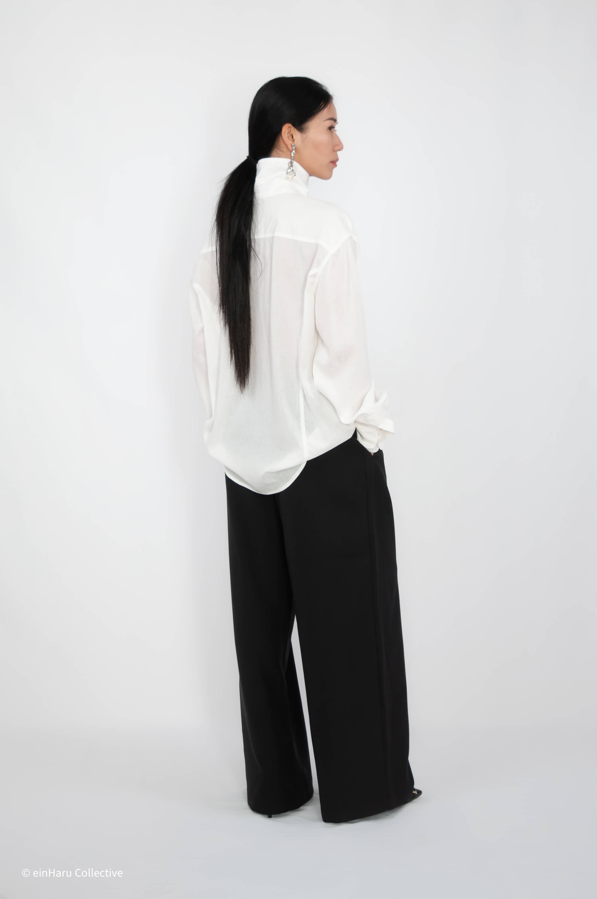
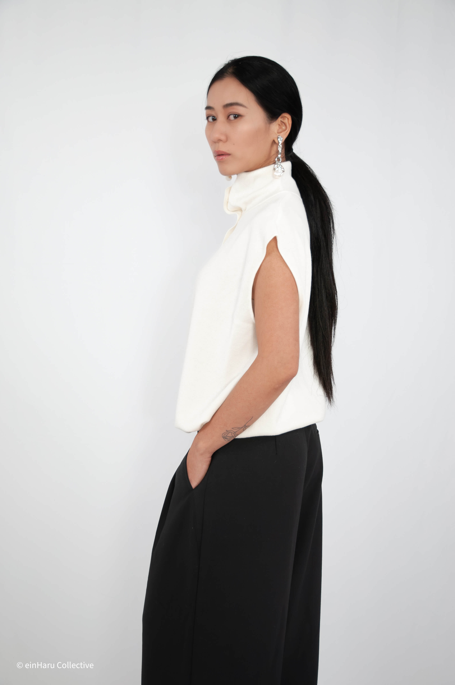
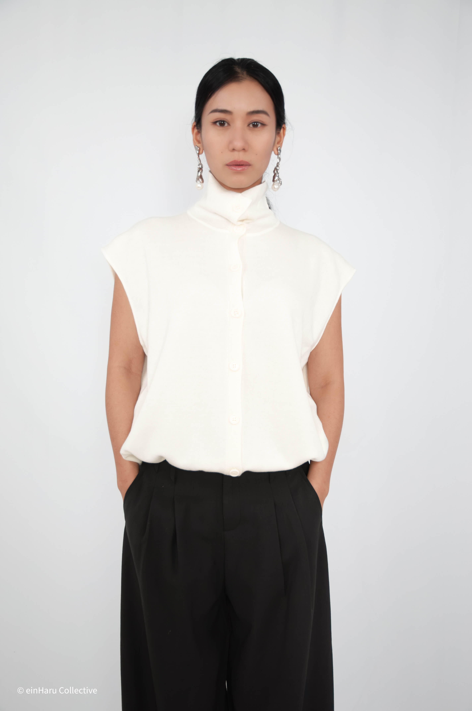

What Is Quiet Luxury Fashion? (And How to Wear It in 2026)
Quiet luxury is one of those terms that rewards a second look. On the surface it sounds like a style category. In practice it's closer to a philosophy: a decision to let construction, fabric, and proportion do the talking instead of logos, colour, or trend.
Quiet luxury in 2026: considered construction, muted palette, no decoration. Two pieces from einHaru that do it right.

What quiet luxury actually looks like
It has been building since 2023, partly driven by Succession's costuming, the Roy family dressed in cashmere and silence, and partly by a broader cultural shift away from conspicuous consumption. By 2026 it has settled into something more durable than a trend: a default register for anyone who wants to dress well without performing it.
The easiest definition is by exclusion. No visible logos. No trend-led shapes. No colour blocking or pattern mixing. No fabric that pills or loses its shape after three wears.
What remains: a muted palette (black, ivory, charcoal, camel, stone), natural or elevated materials (linen, structured cotton, silk, vegan leather), and cuts that prioritise proportion over body-con. The interest comes from shape and detail, not from decoration.

The crucial difference from plain minimalism is quality of execution. A quiet luxury piece doesn't just look simple; it feels simple in a way that takes real craft to achieve. Seams that sit correctly. Fabric that drapes rather than clings. A collar or hem detail that is clearly intentional.
Why the shirt is the quiet luxury anchor piece
If one garment defines the quiet luxury wardrobe, it's a well-constructed shirt. Not oversized-casual, not body-con fitted: a shirt that has considered its collar, its hem, its drape, and its relationship to the body as genuine design decisions.
The quiet luxury shirt sits slightly away from the body. It moves. The fabric has weight but not stiffness. And it has at least one considered detail: a wrap construction, an unusual collar, a hem tie, that makes it read as designed rather than default.


Bijo Shirt
A considered shirt with quiet construction details. Drapes cleanly, sits with intention. The kind of piece that earns a second look without asking for it.
Shop now →When quiet luxury goes softer: the tie-detail top
Not all quiet luxury reads the same. The Bijo Shirt sits at the architectural end: structured, precise, deliberate. But quiet luxury also has a softer register: ivory tones, fluid fabric, a hem tie that adds shape without effort.
The Stand Collar Hem Tie Top works in this space. The stand collar is a signature detail of Korean minimalist design: it frames the face without a lapel's formality and gives a plain top a reason to exist. The hem tie brings in a second design decision: adjustable volume, adjustable length, a small visual event at the bottom of the shirt.
Together: one considered collar, one considered hem, ivory fabric that sits in quiet luxury's core palette. Nothing extra. Nothing missing.


Stand Collar Hem Tie Top in Ivory
A soft-register quiet luxury top. Stand collar, hem tie detail, ivory: three good decisions in one garment.
Shop now →How to style quiet luxury in 2026
The rule is: let the shirt do one thing, and let everything else step back.
With the Bijo Shirt, pair with a wide leg trouser in a tonal shade: charcoal on charcoal, black on black, or a slight tone shift. Let the shirt be untucked or half-tucked. Add one thing: a pointed loafer, a structured bag, a thin belt. Stop there.
With the Stand Collar Top in ivory, go darker below: a black or deep charcoal wide leg grounds the lightness of the ivory and stops the look floating. A clean flat or leather slide at the foot. No jewellery needed; the collar does that work.
Three outfits:
1. Bijo Shirt half-tucked + charcoal wide leg + pointed loafer + minimal shoulder bag
2. Stand Collar Top ivory + black wide leg + leather slide + no jewellery
3. Stand Collar Top ivory + ivory wide leg (full tonal) + tan loafer + one thin gold ring
The quieter the outfit, the more considered it reads.
Is quiet luxury still relevant in 2026?
While some runways trended back toward maximalism in late 2024, the quiet luxury consumer was never runway-driven. They're building a wardrobe, not a season's look. The underlying values, quality over quantity, silhouette over branding, longevity over novelty, don't expire with a trend cycle.
The pieces that matter: a shirt that drapes correctly, a collar that frames without fussing, a hem detail that earns its place. Both of these do exactly that.
Featured in this article
Continue reading: How to Style Wide Leg Trousers in 2026 or return to the Editorial hub.